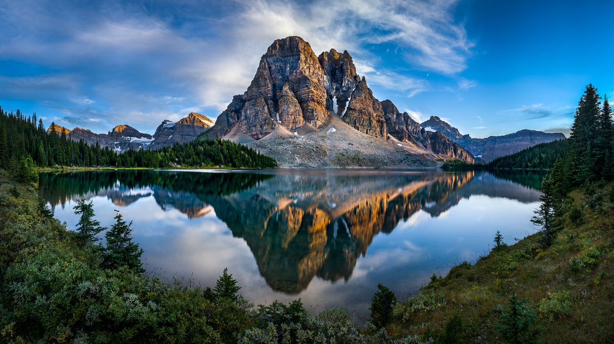

Normal Image
Using:
img {
transform: scaleX(-1);
}
Using:
img {
transform:scaleY(-1);
}
Use the border-radius property to create rounded images:
Use clip-path property to create a clipping region that sets what part of an element should be shown:
Use Clippy -- CSS clip-path maker for complicated shapes.
Use overflow property to set the desired behavior when content does not fit in the element's padding box
The opacity property can take a value from 0.0 - 1.0. The lower value, the more transparent:
The CSS filter property adds visual effects (like blur and saturation) to an element.
The CSS transform applies a 2D or 3D transformation to an element. This property allows you to rotate, scale, move, skew, etc. elements.
You can use transition and transform at the same time to give the image more depth.
img{
height: 30rem;
width: 30rem;
transform: translateX(-15%);
transition: 0.5s linear;
}
.container{
margin-left: 5rem;
border: solid;
width: 25rem;
height: 25rem;
transition: 0.5s linear;
transform: perspective(400px) rotateY(8deg);
overflow: clip;
}
.container:hover{
transition: 0.5s linear;
transform: perspective(400px) rotateY(-8deg);
img{
transform: translateX(-1%);
transition: 0.5s linear;
}
}
You can use animation to make the image shine
img {
animation: light 2s infinite ease-in-out;
animation-direction: alternate;
mask:
linear-gradient(135deg,#000c 40%,#000,#000c 60%)
100% 100%/240% 240%;
}
@keyframes light{
100%{
--i: -1;
mask-position: 0 0;
}
}